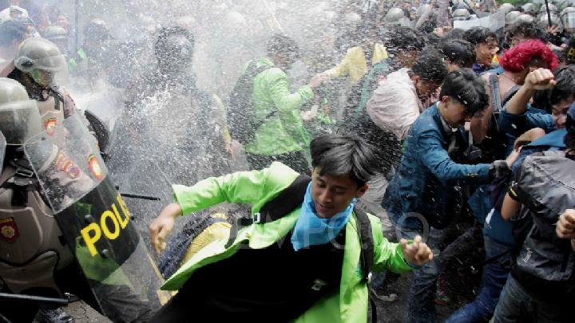
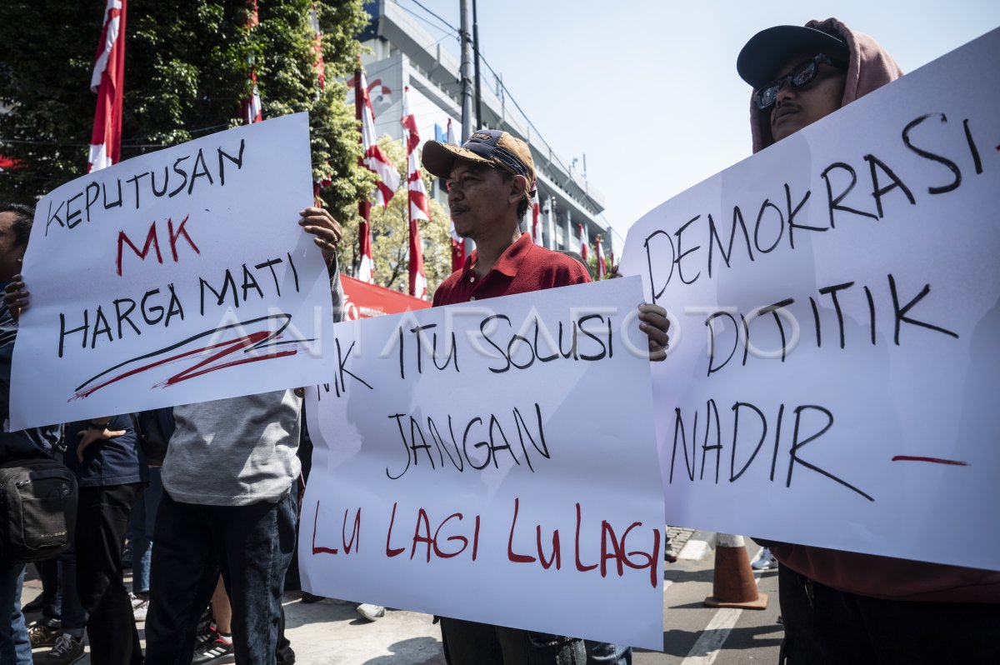

Peringatan Darurat
Ini adalah PERINGATAN TERAKHIR atas mandat Presiden Republik Indonesia.
Jika Anda menemukan situs ini, maka Pemerintahan Republik Indonesia telah usai. Pemerintahan akan diambil alih oleh entitas [BUKAN MANUSIA].
Kami berdoa kepada Tuhan Yang Maha Esa untuk keselamatan seluruh Rakyat Indonesia. Lagu Kebangsaan akan dikumandangkan untuk yang terakhir kali.
BERLINDUNG DAN HINDARI BEPERGIAN KE LUAR.
Aksi Rakyat Indonesia
22 Agustus 2024
Indonesia Tanah Air Beta
Pusaka Abadi Nan Jaya
Indonesia Sejak Dulu Kala
Tetap dipuja-puja Bangsa
Lagu hanyalah tinggal lagu.
Indonesia ku tidak lagi dipuji dan terpuji.
Abadi? Memang abadi.
Bukan pusaka yang abadi melainkan keserakahan pemimpim Negeri
Keluarga-ku MATI!!!!
Tapi Presiden-ku berdiri, mendiirikan dinasti untuk anak istri.
Ayah Ibu-ku lemas ditekan ekonomi!!!!
Tapi yang berjoget-joget makan siang gratis itu berkoalisi sana-sini.
Mengamankan, bukan Negeri tapi harta pribadi.
23 Agustus 2024
Bergerak-bergerak.
Serentak Serentak!
Menerkam menerjang terjang.
Tak gentar! Tak gentar!
Menyerang-menyerang!
Majulah Majulah MENANG
Panjang umur perjuanganku! Jangan engkau diamkan si pelucu itu!
Bergerak walau kau mungkin tak kembali utuh.
Biarkan Negara ini mati tapi jangan Perjuanganmu!
Jangan Diam, BERTERIAK!, Mulutmu sedang disekap si Tukang Kayu!
